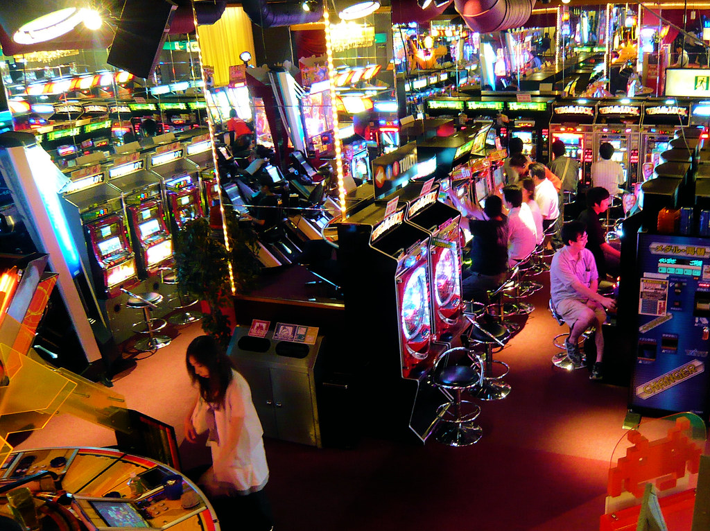
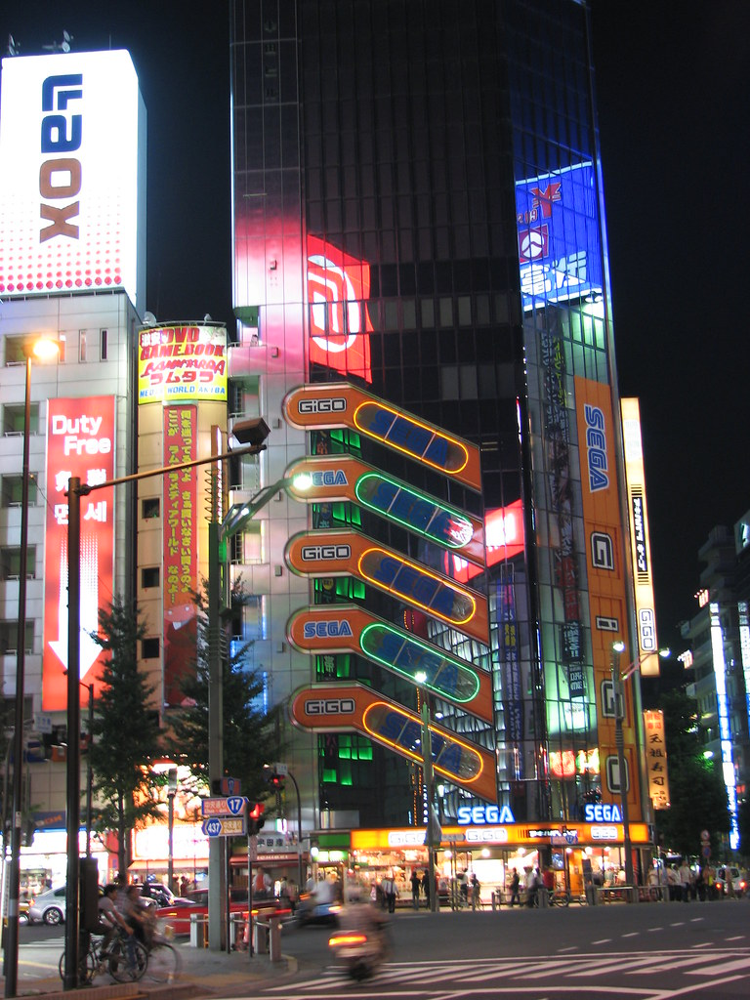

Arcades
A popular thing to do in Japan is to visit the arcades. Big video game and arcade makers originate from Tokyo/Japan such as Nintendo and that is why arcades are seen so highly by both locals and foreigners.
There are not any clear reasons as to why you should visit the arcades in Tokyo but if you are someone who has played at a game hall before and enjoyed the experience then you should really try the arcades in Tokyo because they are at a completely different level.
There are three different arcades you should try, first one is Sega, the second one is taito and the third one is Round 1, all these arcades besides Round 1 can be found in Akihabara. Round 1 arcades can be found in for example Ikebukuro.